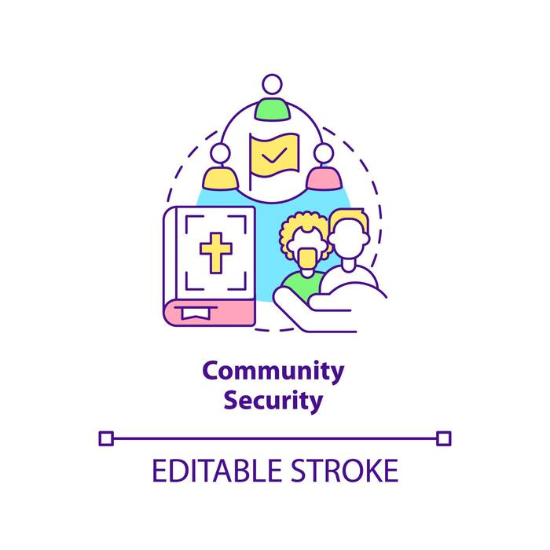

Sobre mí
Soy el desarrollador de este proyecto inspirado en Citizen App, con el objetivo de mejorar la seguridad comunitaria mediante tecnología accesible.
Nuestra misión
La aplicación busca fortalecer la seguridad ciudadana mediante la participación activa de los vecinos, ofreciendo herramientas innovadoras como mapas interactivos de sucesos y acceso directo a números de emergencia.
Visión
Queremos crear una comunidad conectada y protegida, donde la tecnología y la interacción social se unan para prevenir delitos y mejorar la calidad de vida.
